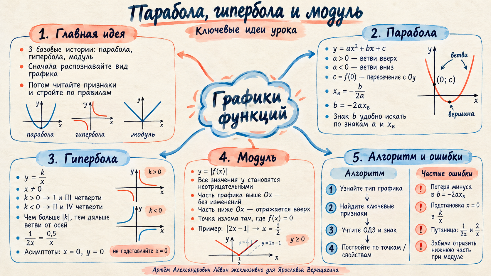

Проверить ответ
a > 0, b > 0, c < 0.
Учебная запись · 24 сентября 2026
Три графических сюжета задания №11: читаем коэффициенты параболы, распознаём гиперболу по знаку k и отражаем отрицательную часть графика при переходе к |f(x)|.
y = ax² + bx + c
Для квадратичной функции a ≠ 0. Направление ветвей сразу даёт знак a, пересечение с осью Oy — знак c, а положение вершины помогает определить знак b.
a > 0, c < 0, xв < 0, значит b > 0.
При a > 0: вершина справа от Oy даёт b < 0, вершина слева — b > 0. При xв = 0 получаем b = 0.
y = k / x
Для гиперболы ключевые признаки считываются быстро: ноль нельзя подставлять вместо x, знак k определяет четверти, а величина |k| меняет положение ветвей относительно осей.
Берите значения x, симметричные относительно нуля: −4, −2, −1, 1, 2, 4. Для y = 2/x получаются значения −1/2, −1, −2, 2, 1, 1/2.
y = |f(x)|
Правило относится к случаю, когда модуль наложен на всю правую часть. Верхняя часть исходного графика остаётся на месте, нижняя отражается симметрично относительно оси Ox.
Для y = |2x − 1| излом находится там, где 2x − 1 = 0, то есть при x = 1/2.
|x² − x − 6|: корни исходной параболы −2 и 3; участок между ними отражается вверх.
|1/x|: сохраняется x ≠ 0; ветвь из III четверти отражается во II.
Визуальная памятка
Ментальная карта собирает формулы, признаки и типичные ошибки в одну схему.

5 заданий
a > 0, b > 0, c < 0.
3/x → второе описание; −2/x → первое; 1/(4x) → третье.
y: −1/2, −1, −2, 2, 1, 1/2. Асимптоты: x = 0 и y = 0.
Точка излома (2; 0). Отражается участок, соответствующий x < 2.
Корни 1 и 3; xв = 2; исходная парабола ниже Ox на (1; 3); этот участок отражается вверх.
Перед следующим занятием
Отмечено 0 из 5 навыков.